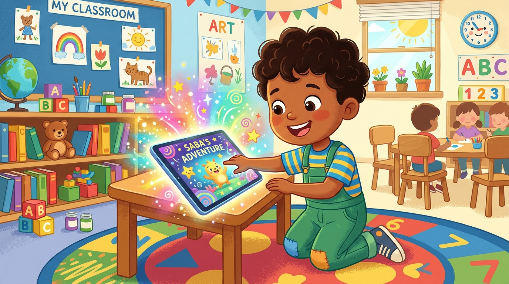

პროექტის მიმოხილვა & ამოცანები
ინტერნეტის ფუნქციური გამოყენება და ცოდნის ტრანსფერი ინკლუზიურ გარემოში
პრობლემის განსაზღვრა
- ინტერნეტის არამიზნობრივი გამოყენება მოსწავლეებში.
- 5-6 კლასის ეროვნული სასწავლო გეგმით შესწავლილი პროგრამების (Paint, Word, PowerPoint, Internet, Scratch, BookCreator) უფუნქციობა პრაქტიკაში.
პროექტის მიზანი
- ინტერნეტის სულ სხვა კუთხით დანახვა და მისი ფუნქციური გამოყენება.
- შესწავლილი პროგრამებით შექმნილი რესურსებით სპეციალური საჭიროების მქონე ბავშვების დახმარება.
პროექტის ამოცანები
- აქტუალური რესურსების მოძიება და კვლევის ჩატარება.
- საინფორმაციო ბროშურების, ელ-წიგნების და საგანმანათლებლო თამაშების შექმნა.
- ანიმაციის შექმნა და გაახმოვანება AI ინსტრუმენტებით.
ეროვნულ სასწავლო გეგმასთან კავშირი (ესგ შედეგები)
სხვადასხვა სახის ციფრული საშუალების შერჩევა და გამოყენება ციფრული მასალის შექმნისას.
ისტ-ის ეფექტიანად გამოყენება ინფორმაციის მიღების, შენახვისა და ორგანიზების დროს.
ინფორმაციის მოძიება და კვლევის პროცესში ციფრული ინსტრუმენტების გამოყენება.
ციფრული საშუალებების გამოყენება კომუნიკაციისა და თანამშრომლობისათვის.
პროექტის განხორციელების 5-ეტაპიანი გეგმა
ინფორმაციის მოძიება
ინტერნეტის რესურსების (ფოსტა, სოც. ქსელები, თამაშები) კვლევა (1 გაკვეთილი).
მასალის წარმოდგენა
ჯგუფების მიერ დამუშავებული მასალის პრეზენტაცია (1 გაკვეთილი).
დახვეწა & შენიშვნები
მასწავლებლის რეკომენდაციების გათვალისწინება (1 გაკვეთილი).
რესურსების შექმნა
Paint, Word, PowerPoint, Scratch, BookCreator-ის გამოყენება (1 კვირა).
ფინალური პრეზენტაცია
რესურსების გაზიარება თანატოლებისა და სპეც-მასწავლებლებისთვის (1 გაკვეთილი).
მოსწავლეთა სამუშაო ჯგუფები
4 სპეციალიზებული ჯგუფი და მათ მიერ შექმნილი ინპუტები
საინფორმაციო ბროშურები & მეხსიერების სავარჯიშო
პროდუქტი: ბროშურები ინკლუზიურ ცნობიერებაზე და მეხსიერების განმავითარებელი ბარათები.
ელექტრონული წიგნი & ანიმაცია
პროდუქტი: "საბას ჯადოსნური ეკრანი" — AI ილუსტრირებული და გაახმოვანებული ზღაპარი.
ინტერაქციული თამაში "ლაბირინთი"
პროდუქტი: მოტორიკისა და ყურადღების განმავითარებელი თამაში ლაბირინთში.
კომპიუტერული თამაში - კითხვარი
პროდუქტი: შემეცნებითი ვიქტორინა ინკლუზიის, ეტიკეტისა და ტექნოლოგიების შესახებ.
ხელოვნური ინტელექტის (AI) პრომპტების ბიბლიოთეკა
მოსწავლეებისა და მასწავლებლებისთვის განკუთვნილი მზა პრომპტები
A friendly 11-year-old boy named Saba with a bright smile discovering a glowing, magical digital tablet screen in a colorful classroom, whimsical children book illustration, soft lighting, vibrant pastel colors, HD --ar 16:9
Diverse school children, including a child in a wheelchair and a child with headphones, playing interactive educational games together, happy atmosphere, vector art style for kids e-book --ar 16:9
შენ ხარ საბავშვო მწერალი და ინკლუზიური განათლების ექსპერტი. დაწერე 100-სიტყვიანი მოკლე, ემპათიური და შთამაგონებელი ზღაპარი მე-6 კლასელებისთვის თემაზე 'საბას ჯადოსნური ეკრანი'. ზღაპარში 11 წლის საბა აღმოაჩენს, რომ კომპიუტერი მხოლოდ თამაშისთვის კი არა, სპეციალური საჭიროების მქონე მეგობრების დასახმარებლად და მათთან საურთიერთოდ არის საუკეთესო ინსტრუმენტი. ენობრივი სტილი იყოს მარტივი, სითბოთი სავსე და ბავშვებისთვის გასაგები.
მომეცი Scratch 3.0-ის ნაბიჯ-ნაბიჯ ინსტრუქცია და კოდის ბლოკები მე-6 კლასისთვის: როგორ ავაგოთ თამაში 'ლაბირინთი', სადაც პერსონაჟი მოძრაობს ისრებით, კედელთან შეხებისას უკან ბრუნდება, ხოლო ფინიშზე გასვლისას გამოდის მილოცვა და ჟღერს გამარჯვების ხმა.
შექმენი მოკლე საინფორმაციო ბროშურის ტექსტი 3 დეკემბრისთვის - შეზღუდული შესაძლებლობის მქონე პირთა საერთაშორისო დღისთვის. ტექსტმა მე-6 კლასელებს უნდა აუხსნას: 1) რას ნიშნავს თანაბარი შესაძლებლობები, 2) როგორ გამოვიყენოთ ტექნოლოგიები სსსმ თანატოლების მხარდასაჭერად, 3) 3 ოქროს წესი სწორი და ემპათიური კომუნიკაციისთვის.
ინტერაქციული თამაშების სიმულატორი
მოსწავლეთა მიერ შექმნილი საგანმანათლებლო თამაშების ონლაინ ვერსიები
კითხვა იტვირთება...
ელექტრონული წიგნი "საბას ჯადოსნური ეკრანი"
BookCreator-ის ფორმატის ინკლუზიური ზღაპარი ხმოვანი გაჟღერებით

1. საბა აღმოაჩენს ციფრულ სამყაროს
ერთ ჩვეულებრივ დღეს, 11 წლის საბამ საკლასო ოთახში მბზინავი ციფრული ტაბლეტი იპოვა. მანამდე საბას ეგონა, რომ კომპიუტერი მხოლოდ გასართობი თამაშებისთვის არსებობდა, თუმცა ეკრანზე უცნაური, ჯადოსნური ღილაკი გამოჩნდა...
შეფასებისა და თვითშეფასების კალკულატორი
ეროვნული სასწავლო გეგმის (ესგ) სტანდარტებზე დაფუძნებული შეფასების ინსტრუმენტი